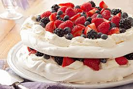
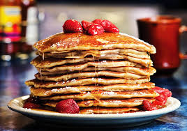

Are you among those who do not like to waste food? Are you breaking your heat thinking "What to do with the leftover food?" . I believe that's the right thing to do. Our motto is to encourage everyone to cook and eat healthy food at home. At the same time it is important that you find smart ways to use up the left overs.
It is not practical to make a perfect amount of food every time. Left over food is very common, especially when you have guests at home. In those days, my grandmother used to give the left over food to some poor people who gladly take it. These days it is difficult to find people who are in need of food here in India. Thanks to our developing country - everyone has food. That doesn't give us excuse to throw away the left overs. There are millions of people still starving in some other part of our country or the world. Indirectly, the food we waste causes a global food imbalance and contributes to starvation. How? Yes, the more food gets wasted, the food demand increases which results in higher price for food. This higher price is a luxury for many people who cannot afford.
To avoid food wastage, it doesn't necessarily have to be reheating and eating the same food again. That might be boring to everyone. Many people have a good motive and promptly refrigerate left overs. At the next meal, they find it so boring to eat the same thing. There are also other dishes which looses its taste and texture on reheating. Do not worry. You can convert them into interesting and delicious new dishes. Here in this page you can find many (40+) innovative ways of using up your left over everyday food like idli, rice, roti, curries etc. Try them and clean up your refrigerator.

